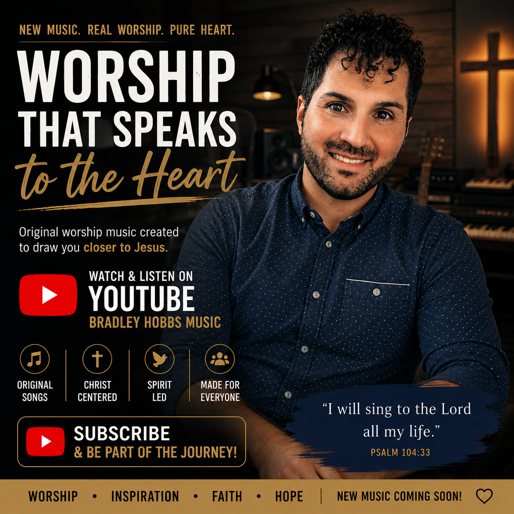

Southern Gospel
Southern Gospel music has shaped my worship journey by proclaiming the hope, grace, and faithfulness of Jesus Christ through timeless songs and heartfelt testimony.
True worship begins long before the first note is played or the first song is sung. It begins in the quiet place where prayer, Scripture, and communion with Jesus shape the heart.
Music simply becomes the outward expression of a life that has already surrendered itself to Christ. Whether through piano, singing, testimony, or silent prayer, worship exists to glorify Jesus rather than draw attention to ourselves.
My desire has always been that every song, every service, and every opportunity to worship would encourage others to draw nearer to the Lord and experience His faithfulness.

"God is a Spirit: and they that worship him must worship him in spirit and in truth."John 4:24
Every opportunity to sing or play is an opportunity to proclaim the goodness, grace, and faithfulness of Jesus Christ.
Southern Gospel music has shaped my worship journey by proclaiming the hope, grace, and faithfulness of Jesus Christ through timeless songs and heartfelt testimony.
Piano accompaniment provides a quiet foundation that supports congregational worship and allows attention to remain focused on Jesus Christ rather than performance.
Every song is offered as an act of worship with the desire to encourage believers, strengthen faith, and proclaim the goodness of God through music.

Worship extends far beyond a church service. It is expressed through daily obedience, faithful prayer, loving others, and living a life that honors Jesus Christ.
Music becomes one expression of worship, but the heart remains its true instrument. A surrendered life speaks louder than any melody.
Whether gathered with a congregation or spending quiet time alone with God, worship is an invitation to respond to His goodness with gratitude, reverence, and wholehearted devotion.
Music provides opportunities to encourage believers and proclaim the Gospel through songs that glorify Jesus Christ.
Supporting congregational worship through piano, singing, and heartfelt praise that keeps Christ at the center.
Ministering through music at church services, revivals, conferences, community gatherings, and special occasions.
Daily worship through prayer, Scripture, and music continues to strengthen my relationship with Jesus Christ.
Recorded music provides another opportunity to share the hope found in Jesus Christ. Whether through Southern Gospel favorites, worship songs, or personal testimony, every recording exists to encourage others in their faith.
Additional recordings, videos, and future projects will continue to be added as this ministry grows.

"O come, let us sing unto the Lord: let us make a joyful noise to the rock of our salvation."Psalm 95:1